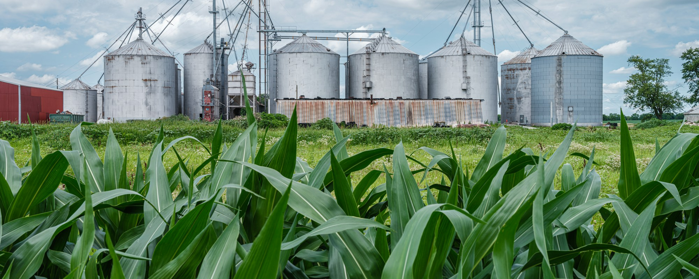
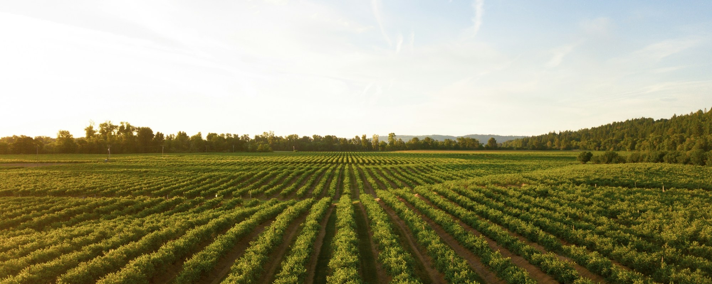

Focus sostenibilità: CAP Nord Ovest

Un'analisi delle performance ambientali, sociali e di governance di CAP Nord Ovest, cooperativa del sistema Consorzi Agrari d'Italia, basata sul primo Bilancio di Sostenibilità 2024.
Il Consorzio Agrario delle Province del Nord Ovest è una cooperativa agricola che opera in Piemonte, Liguria e Valle d'Aosta, a supporto di migliaia di aziende agricole e zootecniche del territorio.
Con 60 punti vendita distribuiti sul territorio, il consorzio garantisce distribuzione di mezzi tecnici, ritiro e commercializzazione di cereali, consulenza agronomica e servizi digitali per l'agricoltura di precisione.
Nel 2024 ha pubblicato il suo primo Bilancio di Sostenibilità, anticipando volontariamente gli obblighi normativi europei (CSRD) previsti a partire dal 2025.
Gestione dei rifiuti, consumi energetici, emissioni, logistica e prodotti a basso impatto ambientale come concimi organici e mangimi certificati NON OGM.
Composizione del personale, parità di genere, formazione, sicurezza sul lavoro, welfare aziendale e supporto alle comunità rurali del territorio.
Struttura del Consiglio di Amministrazione, Codice Etico, Modello 231, sistema di whistleblowing e coinvolgimento degli stakeholder.
Tecnologie di precisione, sensori IoT, droni, analisi dati e piattaforme digitali per ottimizzare la produzione agricola e ridurre l'uso di input chimici.
Indicatori chiave di performance economica, ambientale, sociale e di governance estratti direttamente dal Bilancio di Sostenibilità 2024 (dati esercizio 2023).
Il Bilancio di Sostenibilità 2024 di CAP Nord Ovest, prima rendicontazione non finanziaria dell'azienda, disponibile per la consultazione e il download.

Questo sito è stato realizzato come Project Work nell'ambito della Tecnologia Web per la Sostenibilità d'Impresa. L'analisi prende a riferimento il sistema Consorzi Agrari d'Italia con focus sul caso CAP Nord Ovest, utilizzando come fonte primaria il Bilancio di Sostenibilità 2024.
Bilancio di Sostenibilità 2024 di CAP Nord Ovest – dati relativi all'esercizio chiuso al 31 dicembre 2023.
GRI (Global Reporting Initiative) per la classificazione e l'interpretazione degli indicatori ESG.
Piemonte, Liguria e Valle d'Aosta – le tre regioni in cui opera CAP Nord Ovest con i suoi 60 punti vendita.
I contenuti sono elaborati a scopo didattico e non costituiscono comunicazione ufficiale dell'azienda.